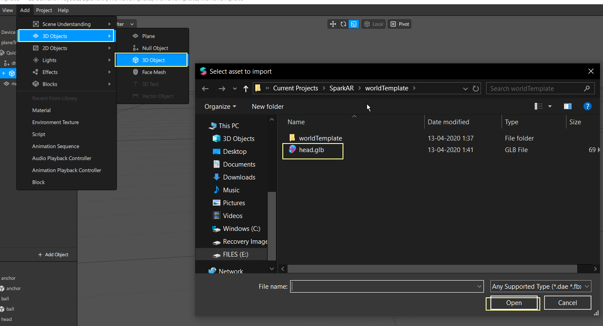

Importing 3D model

MATERIALS

In inspector panel

Let’s look at the various types of shaders:
Standard
This shader type uses a lighting system called the Phong model that's good for simulating realistic lighting on 3D objects.
Flat
This shader type is more performant than the standard shader and doesn't respond to lighting - which makes it good for applying to 2D objects.
Face Paint
Use this shader when you're creating a mask effect that shows some of the user's skin underneath a texture - like a tattoo or make up. This is because the face paint shader preserves the luminance of the face underneath, but removes the color. This means your own texture can be added / multiplied over it.
Blended
The blended shader includes a blending mode to mix textures and colors.
Retouching
Use this shader to add retouching effects to faces and scenes.
Physically-Based
Use this shader to create super realistic looking surfaces. You can apply a combination of albedo, ORM, normal and environment textures to a physically-based material.
APPLYING MATERIAL TO 3D MODEL
- In the Scene panel, select the object, and expand the group.
- Select the part or the 3D object inside the group.
- Now, in the Inspector panel, under the Material option, change it to the material you just created - plastic.
- You should now see the head’s appearance change.

TEXTURE
In Spark AR, you can apply one or more textures to a material, then apply the material to an object. You cannot directly apply a texture to an object without applying it on a material first.
Note:Spark AR Studio supports PNG and JPG texture files. Files can be a maximum of 1024x1024 pixels in size.